Pollen Robotics
Anne-Charlotte Passanisi
Antoine Pirrone
Augustin Crampette
Christophe Bergeret
Claire Houziel
Clement Dussieux
Coralie Deplanne
Etienne Besancon
Fabien Danieau
Rafiaa Khaddhar
Gaëlle Lannuzel
Jeremy Laville
Laura Capdeville
Matthieu Lapeyre
Miguel Rodrigues
Pierre Rouanet
Rémi Fabre
Santiago Pavon
Simon Le Goff
Steve Nguyen
Hugging Face
Alina Lozovskaia
Andrés Marafioti
Antun Skuric
Aritra Roy Gosthipaty
Caroline Pascal
Clément Delangue
David Louapre
Nicolas Rabault
Thibaud Frere
Thomas Wolf
Tom Mulder
Community
Amir Mahla
Bart Rygal
beibei-ovo
Carson Maestas
Daniel Ritchie
Daniiiil1
Drew Schuyler
Dskarr3
efe
Fazli Sapuan
Gijs de Jong
Grégoire Passault
Haixuan Xavier Tao
Hugo Turlet
Jacid23
jrubiosainz
Kamjin
Kentaro Iizuka
LaureenFabre
Lijun Zhu
Manfred + TARS
Mathias Karstaedt
mr-r0b0t
MrHaku81
Nabbil Khan
Nathan Segers
Ola Hungerford
Ori Nachum
PizBernina
robin
Simon Automne-Pinto
SunixLiu
Thor 雷神 Schaeff
tianrking
Toaster-Smuggler
Volodymyr Kublytskyi
Wee Ki Joon
Yael
Yasemin Ozkut
yeungadrian
秀吉
逐星大恶猫
Giving
a body
to AI
Reachy Mini, Microduck and robots you can talk to
Dr Andi Marafioti
Multimodal Research Lead · Hugging Face
Andi
Multimodal Research Lead at Hugging Face
Argentinian
Unity
Intuitive Surgical
01
AI changed the
digital world
Writing, code, images, search. Everyone can see it, because everyone uses it.
Robotics is changing too,
more quietly
Walking learned in simulation
Reinforcement learning in a physics simulator, then real motors.
Skills learned from demonstrations
Record people doing a task, train a policy on the recordings.
Behaviour from language models
Speech, vision and LLMs let a robot understand people and answer them.
The state of robotics
We build robots in shapes we know
Dogs, humanoids, cars.
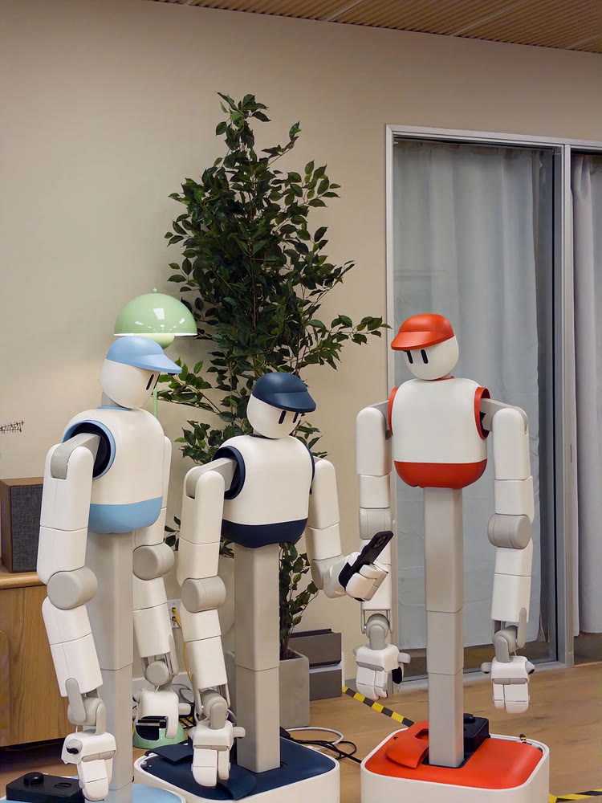
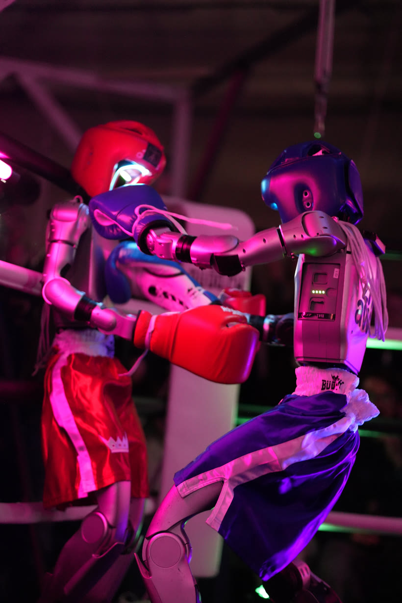
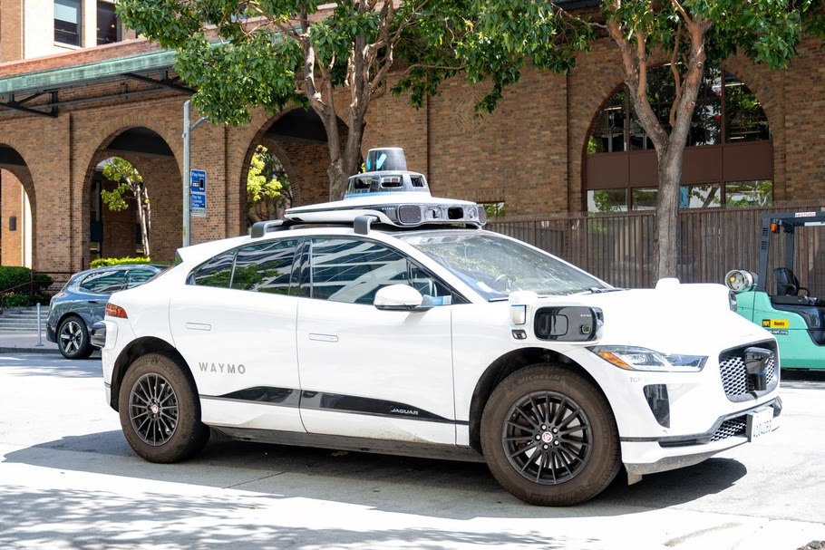
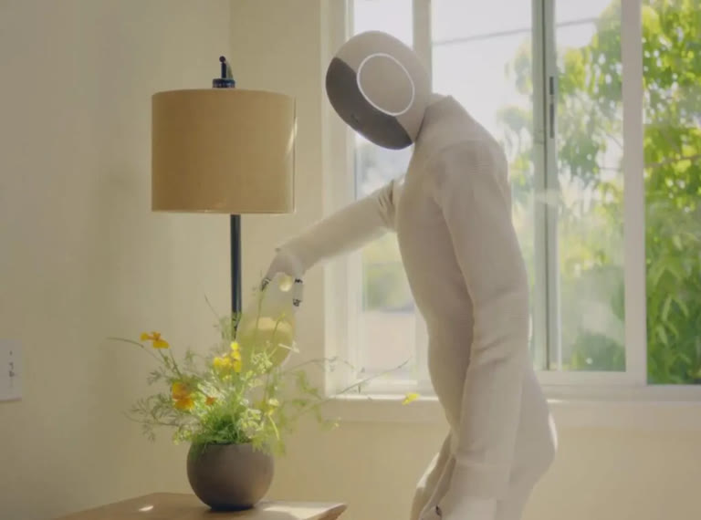
Motion is a choice
“Always important to remember that a lot of these robots are ‘faking’ the humanlike motions — its a property of how they’re trained not an inherent property of the hardware. They’re actually capable of way weirder stuff and way faster motions.”
Chris Paxton, on X
Why it is hard to see
Most people never
touch a robot
Too expensive
to prototype. Research robots cost tens of thousands of euros.
Too complex
to adapt. Closed stacks and hours of setup before anything fun happens.
Too stiff
to connect with. They move like machines, not like someone paying attention.
Hugging Face
Doing for robotics
what we did for AI
For AI
For robotics
Open-source library
Transformers, Diffusers
LeRobot
Shared on the Hub
Models and datasets
Policies and robot datasets
Apps anyone can run
Spaces
Robot apps, also Spaces
Where it runs
Your laptop, the cloud
A robot on your desk
The family
Open-source humanoid torso. Two arms, mobile base, and an expressive head.
Enhanced version. 3 kg payload, VR teleoperation.
Humanoid hand. 8 DOF, 3D printed, low cost.
Desktop AI companion, 9 motors, apps on the HF Hub.
Tiny biped. 15 servos, walking learned in simulation.
Handheld gripper to record manipulation data. On a robotic arm, Gripette performs learned tasks.
Learns to walk in simulation
03 Reachy Mini
A robot for conversations, games and play. Built to be talked to, not to pick things up.
Live: unboxing
Reachy Mini
01 · The box
What ships, and how it’s packed
02 · Inside
Motors, shells, electronics, screws
03 · Not built
It’s a kit: you put it together yourself
What's
inside
Reachy Mini Wireless runs on board on a Raspberry Pi CM4 with a 2000 mAh battery. Reachy Mini Lite is driven over USB from your computer.
Stewart
platform
Six motors move the head in six degrees of freedom. A seventh turns the body, for larger amplitude.
The point: a super expressive robot.
Antennas
Two small motors, there only for emotion.
Emotions
& dances
Shipped with the robot: a library of pre-made moves, one call away.
85 emotions with their sounds and 19 dances on the Hub. Record and share your own from your phone with Marionette.
The
camera
A wide-angle eye in the bridge between the two lenses.
Micro-
phones
Four microphones on top of the head. The array tells where a sound comes from.
Where is
that sound?
The mic array estimates where a sound comes from: its direction of arrival. Reachy Mini turns toward it.
Object
tracking
The camera tracks a face or an object. Head and body turn together to keep it in view.
The conversation app uses it to look at you.
Desktop & mobile apps
Easy setup, robot configuration and app management.
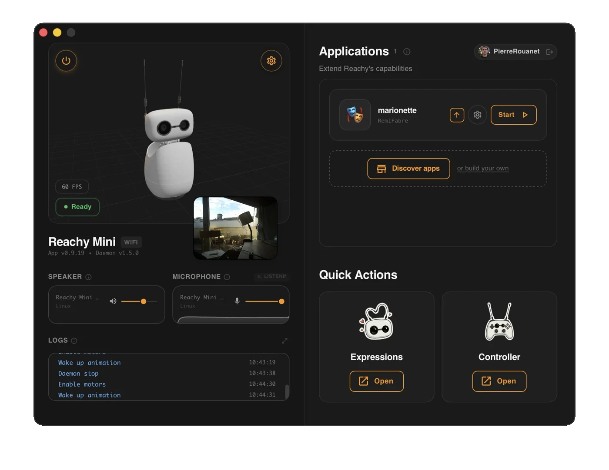
Robots
can be
weird
You don’t have to build another dog or humanoid. A head and two antennas is enough. So is a duck.
Don’t play it safe, have fun. The shell is just a shell: people print their own and share them.
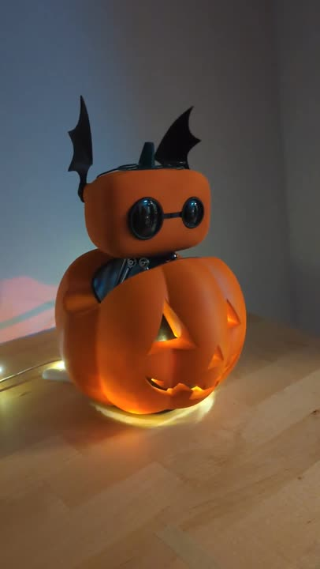
The stack
The SDK
Python & JavaScript
Python
Autonomous apps, running on the robot with direct access to the camera and the microphones. Example: the conversation app.
$ pip install reachy_mini
from reachy_mini import ReachyMini from reachy_mini.utils import create_head_pose with ReachyMini() as mini: # look up and tilt the head mini.goto_target( head=create_head_pose(z=10, roll=15, degrees=True, mm=True), duration=1.0)
JavaScript
Easy to deploy: apps hosted on Hugging Face Spaces, with remote GPUs, talking to the robot through WebRTC.
$ npm install @pollen-robotics/reachy-mini-sdk
import { ReachyMini } from "@pollen-robotics/reachy-mini-sdk"; const robot = new ReachyMini(); await robot.connect(); await robot.startSession(robotId); robot.setHeadRpyDeg(0, 10, -5); robot.setAntennasDeg(30, -30);
04
Many of our conversations
with AI will be spoken
And a lot of them will happen with something that has a face.
Text, voice, body
Speech-to-speech has challenges
Typing to AI
Talking to AI
Talking to a robot
Your turn ends
When you press send
When it guesses you stopped
When it guesses, while showing it listens
You interrupt
Never needed
It must stop talking
It must stop talking and moving
It thinks
A spinner is fine
Silence feels broken
Silence and stillness feel broken
Attention
Not a question
Not a question
It must look at whoever is speaking
My opinion
No robot you
can talk to
feels natural
yet
Robots are socially awkward. How do we make them friendly?
05
Building the
conversation
How we try to make a robot you can actually talk to.
The state of voice AI
The models are good.
The conversation isn’t.
Commercial
Great products, and some unsolved problems
gpt-live-1
Gradium
Siri
Open source
Great models, but more engineering
Whisper
Parakeet
Kokoro
Qwen3-TTS
Drama 3
Our library: speech-to-speech
Build voice agents with open-source models. It runs entirely on your computer: no API key, no cloud service.
The defaults; every stage is swappable. It speaks the OpenAI Realtime protocol, so apps built for OpenAI’s API can point at your own machine. Apache 2.0.
Conversation app
On Reachy Mini
- A Python app that forwards audio and images
- MCP tools fetch information from the web
- Robot tools: moves, emotions, camera image, start face tracking, sound volume, etc.
- Talks to a speech-to-speech backend
You"Is it going to rain in Bordeaux today?"
Reachy"No rain today. Enjoy the sun!"
1.3 s median from end of speech to first audio · 1.8k conversations a day
Design principle
A fast body,
a slow brain
Fast loop · on the robot
Milliseconds
Hears you start talking, locally
Turns toward the voice, follows your face
Moves along with its own speech
Stops the moment you interrupt
Slow loop · the backend
Seconds
Decides your turn is over
Transcribes what you said
Thinks, calls tools, writes the answer
Speaks it, maybe with a dance
The body has to react before the brain has an answer.
For agent builders
The body is a set of tools
Body
move_head · head_tracking · sweep_look · dance · play_emotion · go_to_sleep
Senses
camera · robot_status · volume_control
Memory
remember · forget
MCP
search_web · get_weather · get_time
A personality is a prompt plus a list of tools. Web tools are MCP servers hosted as Spaces.
profiles/guide/profile.md
+++
schema_version = 1
voice = "Aiden"
default_tools = [
"dance", "camera",
"sweep_look",
]
+++
## Identity
You are a concise, friendly
robot guide.
Live demo
Talking to
Reachy Mini Lite
“What’s the weather like today?”
get_weather · MCP
“Can you dance for us?”
dance · robot tool
Interrupt it mid-sentence
barge-in
Ask in German, then in Spanish
multilingual
Thousands of robots, GPU-poor
2 · URL + signed token
A platform people use
Robotics for everyone
578 apps, 423 moves, 1,401 posts and 63k+ hours of conversation so far: anyone can use, program and share apps.
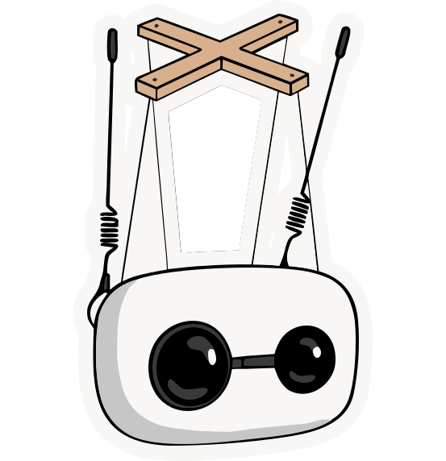
The MarionetteRecord moves from your phoneResearch: generate them from textpollen-robotics/marionette-js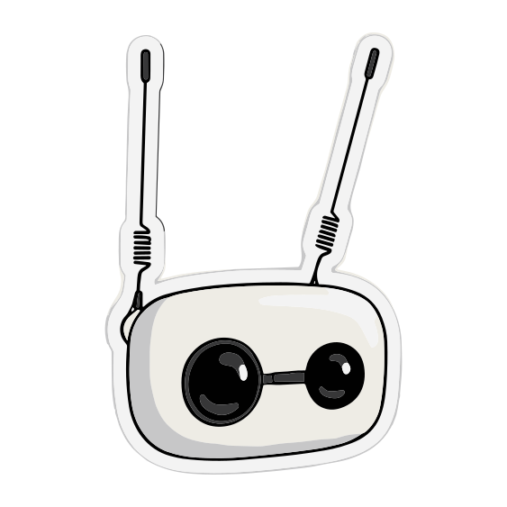
Reachy Vibe CoderDescribe an app, get it builttfrere/reachy-mini-vibe-coding-apps| Month | Apps | Moves | Posts | Conversation days |
|---|
All over the world
What people build
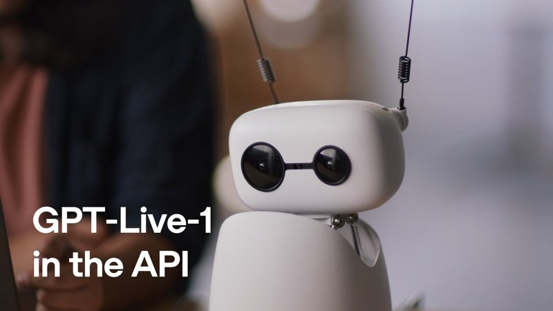
OpenAI voice agent
7.4M views
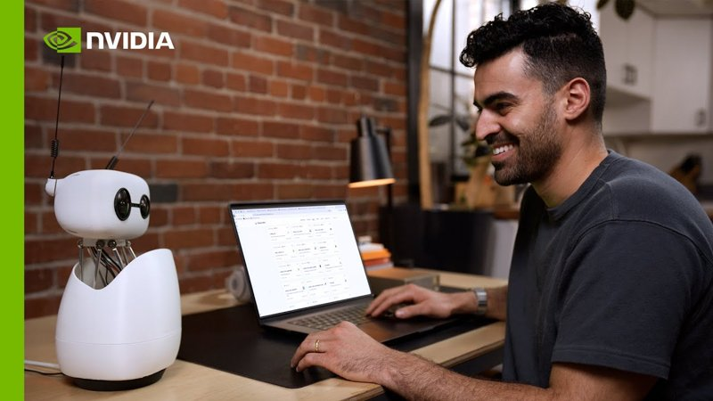
NVIDIA assistant
563k views
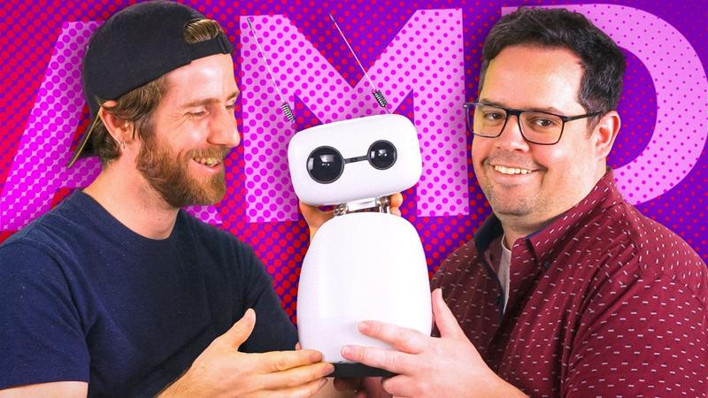
Linus Tech Tips
1M views
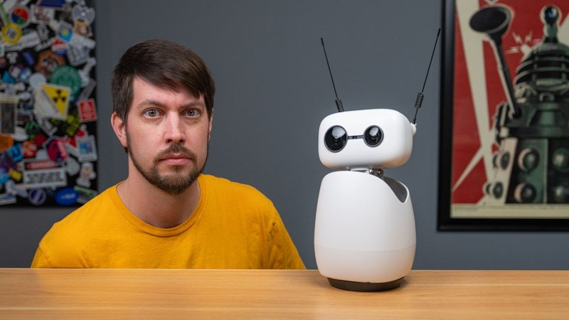
Jeff Geerling
190k views
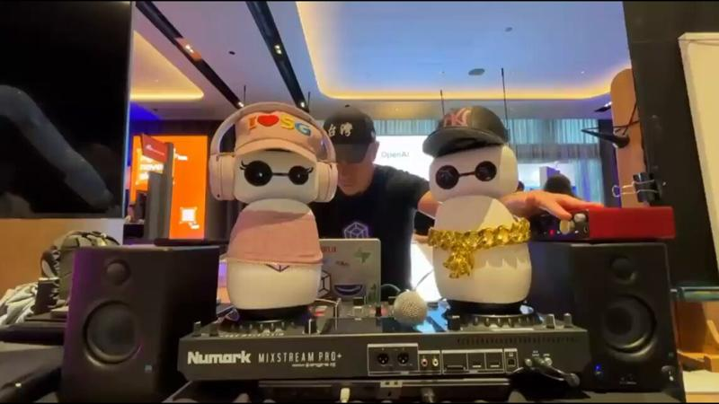
A rap battle
AI Engineer Singapore
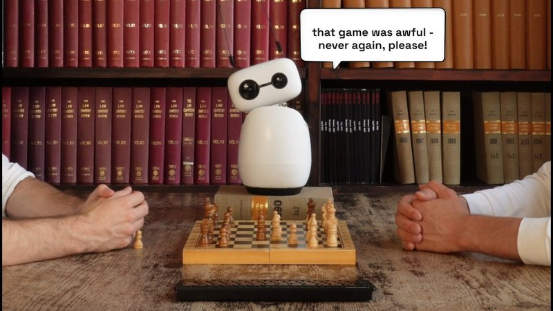
Chess companion
Comments your game
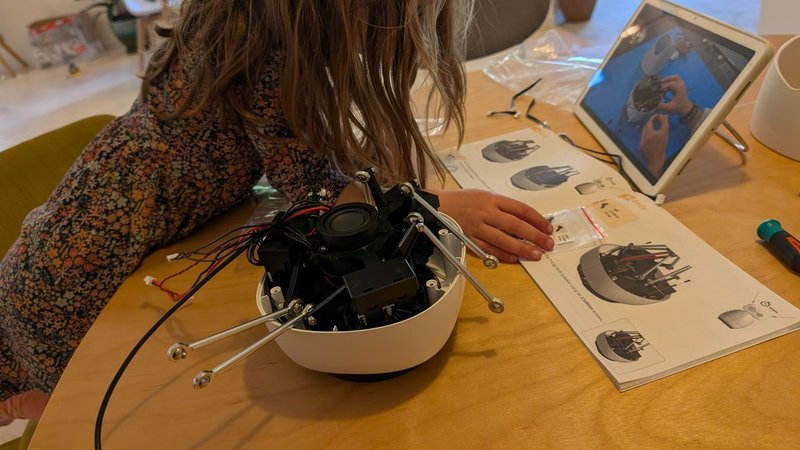
Built with kids
A 6-year-old builds hers
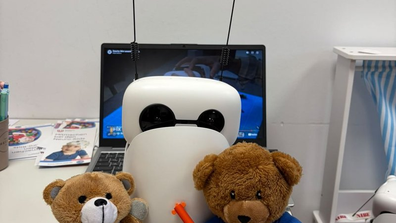
Child–robot studies
A research lab
Design your interaction
You can just vibe code your robot apps
The SDK, the apps and the docs are open, so a coding agent can read all of it.
“Create a Reachy Mini app called standby: move the antennas like the conversation app, and every 20 seconds play a random dance or emotion. Deploy it to a Space so I can install it. Go!”
Research
Already in papers
IROS 2026
Lopez-Francos et al.
Space crew teaming: an agent for deep-space crews
ICSR 2026
Vonschallen et al.
Requirements for generative social tutors
arXiv 2026
Vonschallen et al.
Teachy Mini: a tutor robot for higher education
arXiv 2026
Rogel et al.
Reading emotions from a low-DoF head and antennas
AMCIS 2026
Dishman et al.
AI study buddy: does a body help students learn?
SFU URS 2026
Dinh et al.
Real-time responses to emotions and gestures
Open source
Honda Research Institute EU
VR teleoperation from a Meta Quest
For the students
Open problems
worth a thesis
Turn-taking
When is someone really done, and when is it fine to jump in?
Interruptions
Stopping gracefully, and remembering what was left unsaid.
Several people
Who is speaking, and who are they talking to?
Expressive motion
Generating moves from speech and text, not picking from a library.
Memory
Remembering you across days, and forgetting what it should.
Latency
Well under a second from your last word to its first, on cheap hardware.
Questions?
Give AI a body, and let everyone build with it.
Start
huggingface.co/reachy-mini
andres.marafioti@huggingface.co
X · GitHub
@andimarafioti
Thanks to Fabien Danieau and the Pollen Robotics team. 3D scene, slide design and some material from Fabien’s Reachy Mini talk, FabienDanieau/reachy_mini_intro, CC BY 4.0.
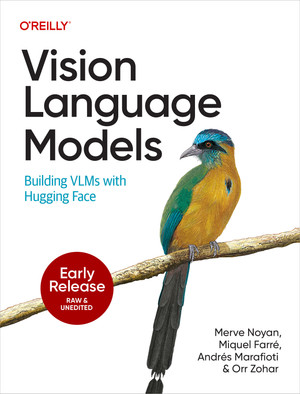
Co-author of Vision Language Models, O’Reilly